メイン
管理者設定メニュー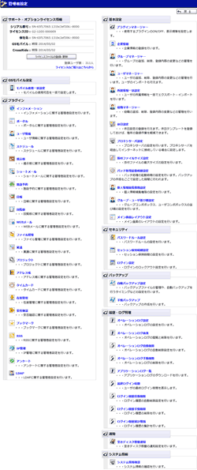
休日設定
休日設定/追加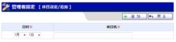
休日削除確認
休日テンプレート一覧
テンプレートから追加確認
テンプレート追加/通常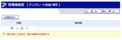
テンプレート追加/拡張
テンプレート削除確認
休日設定インポート
休日設定インポート確認
休日テンプレートインポート
休日テンプレートインポート確認
バッチ処理起動時間設定
バッチ処理起動時間設定(確認)
ディスク容量管理
ディスク容量管理確認
プロキシサーバ設定
プロキシサーバ設定確認
自動バックアップ設定
自動バックアップ設定確認
手動バックアップ設定
オペレーションログ設定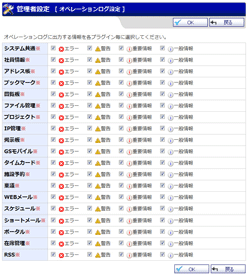
オペレーションログ設定確認
オペレーションログ検索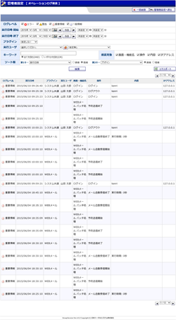
オペレーションログ自動削除
オペレーションログ自動削除確認
オペレーションログ手動削除
オペレーションログ手動削除確認
統計情報自動削除設定
統計情報自動削除設定確認
統計情報手動削除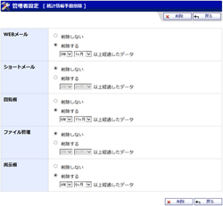
ログイン設定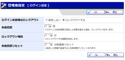
ログイン設定確認
アプリケーションログ一覧
役職マネージャー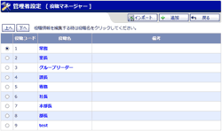
役職登録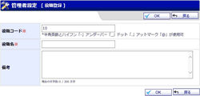
役職編集
役職登録確認
役職編集確認
役職インポート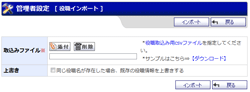
役職インポート確認
ライセンスファイル登録・更新
ライセンスファイル登録・更新確認
プラグインマネージャー(プラグイン設定)
プラグインマネージャー(制限設定)
プラグインマネージャー(メニュー表示設定)
プラグイン使用制限
プラグイン使用制限確認
プラグイン追加
プラグイン追加確認
添付ファイル設定
添付ファイル設定確認
セッション保持時間設定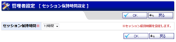
セッション保持時間設定確認
モバイルID・パスワード保存設定
モバイルID・パスワード保存設定確認
モバイル使用一括設定
モバイル使用一括設定確認
ログイン履歴自動削除設定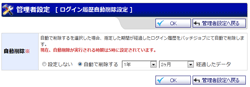
ログイン履歴自動削除設定確認
ログイン履歴手動削除設定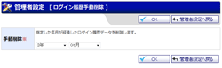
ログイン履歴手動削除設定確認
ログイン履歴統計情報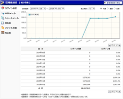
最終ログイン時間(管理者)
最終ログイン時間 詳細検索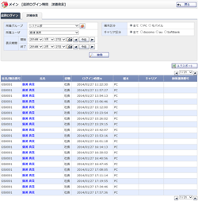
最終ログイン時間(一般ユーザ)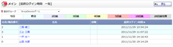
グループ・ユーザ並び順設定
メイン画面レイアウト設定(管理者設定)
メイン画面レイアウト設定確認(管理者設定)
ログイン履歴詳細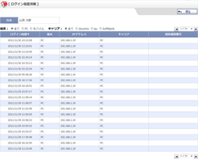
パスワードルール設定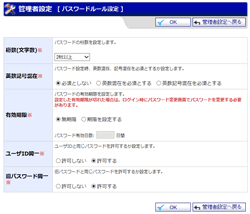
パスワードルール設定確認
インフォメーション登録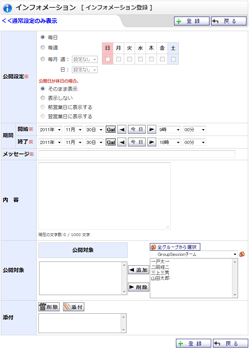
インフォメーション変更
インフォメーション登録確認
インフォメーション変更確認
インフォメーション 管理者設定
インフォメーション 管理者設定確認
インフォメーション一覧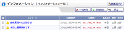
グループマネージャー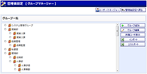
グループマネージャー(追加)
グループマネージャー(編集)
グループマネージャー(追加確認)
グループマネージャー(編集確認)
グループマネージャー(削除確認)
グループマネージャー(所属ユーザ一覧)
グループインポート
グループインポート(確認)
ユーザマネージャー[五十音検索]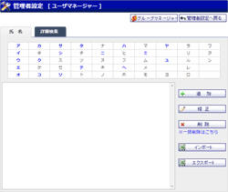
ユーザマネージャー[詳細検索]
ユーザマネージャー(追加)
ユーザマネージャー(追加確認)
ユーザマネージャー(削除確認)
ユーザインポート(グループ指定)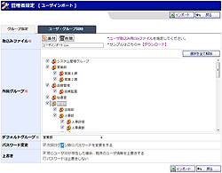
ユーザインポート(グループ指定確認)
ユーザインポート(ユーザ・グループ同時)
ユーザインポート(ユーザ・グループ同時確認)
ユーザ一括削除
ユーザ一括削除(確認)
企業情報登録
企業情報登録確認
システム情報
個人設定メニュー
パスワード変更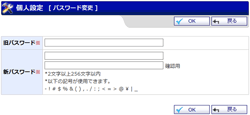
個人情報の修正
個人情報の修正確認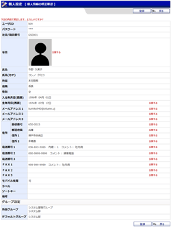
メニュー項目の設定
メイン画面表示設定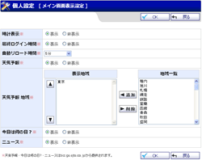
マイグループ設定
マイグループ登録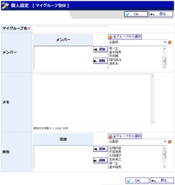
マイグループ登録確認
マイグループ編集
マイグループ編集確認
インフォメーション一覧
インフォメーション登録
所属情報一括設定 エクスポート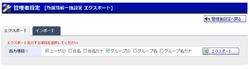
所属情報一括設定 インポート
所属情報一括設定 インポート確認
メイン画面レイアウト設定(個人設定)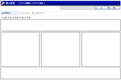
メイン画面レイアウト設定確認(個人設定)
個人情報編集権限設定
個人情報編集権限設定確認


![ユーザマネージャー[詳細検索]](../../user/help/images/scr_help_usr0301.gif)